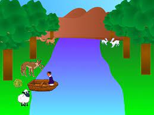
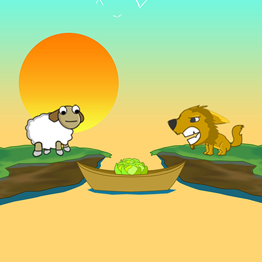
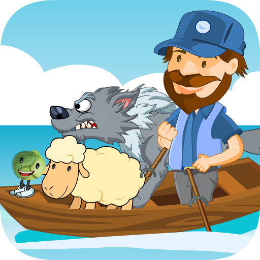

ב
מסגרת עבודתי כCTO של מיסטרביט אני מייעץ לחברות ולסטארטאפים בנושאים של פיתוח תכנה, ארכיטקטורה, ראיונות עבודה ועוד. פוגש גופי פיתוח רבים ותמיד סקרן ללמוד מהם על תובנות ואסטרטגיות פיתוח ששירתו אותם. אנו גם שולחים מתכנתים רבים לראיונות עבודה כך שאנו מתעדכנים תדיר לגבי הדרישות המשתנות בראיון עבודה.
במאמר זה נתמקד בשלב הראיון המקצועי בו המועמד נדרש להציג את שליטתו בפיתוח בטכנולוגיות הרלוונטיות למשרה ועל המראיין נדרש לקבוע עד כמה המועמד מוכן להשתלב בתוך צוות פיתוח בחברה. לכן כדאי להתאמן על פתרון של שאלות ראיונות עבודה, ישנם אתרים רבים המציעים שאלות כאלה.
המראיין נשען מעט על קורות החיים ועל תעודות אבל מראיינים מיומנים יודעים שפחות חשוב מה כתוב שלימדו אותך או שעשית והחשוב הוא מה אתה יודע כיום
לכן פעמים רבות הראיון המקצועי המעמיק מתבצע לאחר שיש קוד להסתכל עליו ביחד: זה יכול להיות קוד משמעותי שהמועמד כתב ושניתן להצגה – פרוייקט מרשים שהוא כתב בעצמו. לעיתים קרובות יינתן גם מבחן בית ייעודי שהמועמד יבצע ויגיש.
באמצעות מעבר משותף על קוד ניתן למראיין הזדמנות לגשש ולהתגושש, לשאול ולאתגר את המועמד לגבי בחירות שביצע ואסטרטגיית הפתרון שלו - ניתן לראות עד כמה הקוד מוקפד, נקי, ומתועד, האם הקוד פותר את הבעיה באופן יעיל ואפקטיבי, עד כמה חוויית המשתמש מוקפדת, כמה נעים הדיון, ועוד
כמה טיפים לראיון מוצלח
עבודת הכנה יסודית – על החברה ותחום העיסוק שלה, מה הם מחפשים, מי עובד שם
להגיע בזמן - לפחות רבע שעה לפני הראיון
להביע התלהבות ועניין בתפקיד, היו חיוביים
היישירו מבט למראיין, לשמור על כנות ופתיחות
להפגין ידע מקצועי במהלך הראיון ללא שחצנות
לענות לעניין, לחשוב בקול רם, לדבר על מה שכן יודע, להפגין ביטחון
להציע להסתכל על קוד שכתבת
להראות מוטיבציה ואהבה לפיתוח ולעולם הטכנולוגיה
לא לשכוח לחייך –תחושה שנעים לעבוד איתך
יש שאלות? כן, לפחות אחת
טיפ מיוחד למשרה הראשונה
במקצועות רבים, הקבלה למשרה הראשונה היא מאתגרת, שכן אנשים מנוסים יקבלו עדיפות, בעולם הפיתוח וההייטק זה גם כך ואולי ביתר שאת. לכן המועמד הג'וניור צריך להתאמץ משמעותית יותר על מנת לקבל את ההזדמנות שלו להוכיח את עצמו.
כדי לשפר ככל האפשר את הסיכויים לזכות במשרת מתכנת יש חשיבות גם לאופן שבו המועמד יציג את עצמו בקורות החיים, ובמדיה הדיגיטלית. בקורס התכנות שלנו - קודינג-אקדמי, אנו מקיימים הכשרה ספציפית לנושא על מנת לאפשר השתלבות אפקטיבית ומהירה בהייטק.
סיפור הומוריסטי של מועמד למשרת מתכנת
הערה – הסיפור משובץ בהרבה מושגים מעולם התכנות שאנחנו פוגשים במהלך ההכשרה למקצוע ולראיונות העבודה
הייתי בראיון עבודה, היה כתוב שצריך אוניברסיטה וזה, אני - את יודעת אין לי תואר, למדתי בבוטקאמפ. בכל זאת למרות שאין לי, הזמינו לבוא - ראיון מקצועי, באתי.
ניתן גם לצפות בהקלטה
הגעתי, וואלה נשמה, את לא מאמינה איזה מקום. אמרו לי לשבת על המחשב באיזה פינה ולכתוב סקריפט למשל שסופר עד 10 ושעוד מעט מישו יבוא לדבר איתי.
בשביל הדיגום שמתי הכל בIIFE, העברתי לArrow Function ניטרלתי את הגלובלי וזהו. נשאר לי זמן, ואני קולט את האנשים שם ווי את לא מבינה
עברתי לפלקסבוקס, נתתי לו media query על הפונט סייז, שמתי animate CSS שיבוא לו בפולסים תוך הראש, אבל לא רציתי להביא הכל ככה, אז התקנתי שניה node, הורדתי sass וקימפלתי רק את האנימציות שהייתי צריך.
באמצע נמאס לי לרפרש כמו ג'ינג'י, אז שמתי לו auto reload, ואז עצבן אותי שכל הזמן הוא מאפס לי את הקאונטר, אמרתי מבעיה, שמתי לו שמירה בlocalStorage, JSON, parse, רגוע.
כבר היה לי יותר מידי טרמינלים אז שמתי לו TASK קטן הוספתי WATCH על הSASS ועל הדרך הוספתי לו טאסק לBUILD שיעשה כבר מיניפיקציות ושרשורים וסגרתי עניין.

פתאום חשבתי שלא אמרו לי מאיזה דפדפנים זה אמור לעבוד, אמרתי אולי טריק כמו הסגור תדלת של המתכנתים, בשביל להיות בטוח, הכנסתי JQUERY שהכל ינגן גם ב-IE ענתיקה וקמתי לקרוא לבנאדם. הוא אמר שהוא עוד מעט הוא יגיע.
עכשיו מה, המחשב שלהם שם היה וואחד עגלה ובזמן שחיכיתי לו, ראיתי שהאנימציה נתקעת לפעמים, העברתי מהר את הקוד של החישוב לweb worker שירוץ ברקע. עבד חלק. מחכה
שמתי לב שיש לי שם (את יודעת) implicit casting מסטרינג למספר כשזה מגיע בpostMessage אז החלטתי שאם כבר ככה אז אני אשים TypeScript שלא יעשו עלי דאווינים.

הבנאדם הגיע ואמר שהוא מצטער, קפץ לו משהו, והוא יוכל להתפנות אלי רק בעוד רבע שעה אז שאני בינתיים יכול לחכות או לשפר את הקוד אם אני צריך. אמרתי לו מה לעשות תן איזה כיוון, אמר לא יודע אולי איזה כפתור
החלטתי להוסיף גם יכולת לעצור את השעון, ודברים כאלה כבר הכי טוב לעשות כבר עם RXJS אז הוספתי אותו עם כמה אופרטורים, interval, observable, subscribe, פשוט.
פתאום אני קולט שלפעמים הlocalStorage נחנק, והקאונטר סופר עד 7... ומפסיק, בודק, וואלה ההארד-דיסק על המכונה כמעט מלא, מתוחכמים אלה, אמרתי ככה? אין בעיה, סגרתי את זה מהר עם retries.
בודק פעם, פעמיים, בסדר, פתאום... סופר עד 13. שמתי לו takeUntil, שבכל מקרה יסיים אותו בזמן לא משנה מה קורה. עובד.
פותח IE לראות שהכל תקין גם שם, כפרה חושך. סופר אפס, אפס, אפס - נגנבתי, מסתכל ימינה שמאלה, אולי מצלמים אלה לכי תדעי
פה לשם, אמרתי אין בעיה, ככה? נעשה קונצנזוס. כתבתי אלגוריתם קטן משלי, שמתי שלוש וורקרים, לא עשיתי SHARED WORKER למה זה מסוכן זה יכול להרוג אותך. עשיתי mergeMap לתוצאות שלהם, פשוט – עבד בומבה
ואז, משום מקום, split brain, והmain thread תקוע במיעוט של הקונצנזוס והכל תקוע, תקוע
אבל ידעתי שאם אני צריך שיהיו לי כמה קאונטרים כאלה על הדף זה לא היה עובד טוב. אמרתי יאללה קומפוננטות.
חיברתי ריאקט.
ראיתי שכבר הגעתי עד פה אז כבר הכנסתי רידקס, רידוסרים, איזה ט'נק, וארזתי לו הכל עם אובסרוובלס, שיהיה הכי פשוט.
איך שאני מעמיד אותה הבנאדם הגיע עם הקורות חיים שלי, התיישב, מסתכל עלי בלי לדבר, כבר ידעתי שלא עברתי, אני בא להראות לו, אומר לי, שהוא יותר מה HR, ושאין לי תואר מהאוניברסיטה וכל זה, ויש לו במקום כמה שאלות תאורטיות וחידות.
משהו עם כבשה וזאב, וסירות, לא ממש זוכר נשמה, זהו.

לא לא לא עברתי, נו את יודעת שיש לי את הפחד מחיות במיים.
בהצלחה!
מאמרים נוספים
פרונטאנד - בקאנד ומה שביניהם
בעברי הובלתי את קורס התכנות של ממר"ם מספר שנים והכשרתי מאז אלפי
מתכנתים.
הרבה אנשים שואלים אותי איך כדאי להכנס לעולם הפיתוח וההייטק, ואני עונה שהכי כדאי ללמוד את המקצוע
המבוקש
ביותר בתעשיה כיום - Full Stack Developer...
למאמר המלא
האם תואר במדעי המחשב נדרש כדי להשתלב כמתכנתים בהייטק
בעבר, תואר במדעי המחשב היה תנאי די הכרחי על מנת להשתלב כמתכנת (למעט יוצאי ממר"ם שנחטפו לעבודה כך
או
כך) אך המציאות השתנתה וכיום במיטב החברות, התואר הפך להיות מרכיב זניח ביחס לאלמנטים אחרים כגון...
למאמר המלא
יש ChatGPT - עדיין כדאי ללמוד תכנות ב-2023?
למידת מכונה (Machine Learning - לעיתים מכונה גם למידה חישובית) היא תחום במדעי המחשב העוסק בפיתוח
אלגוריתמים המיועדים לאפשר למחשב ללמוד מתוך דוגמאות, ולבצע משימות חישוביות בהן התכנות הקלאסי אינו
אפשרי...
למאמר המלא